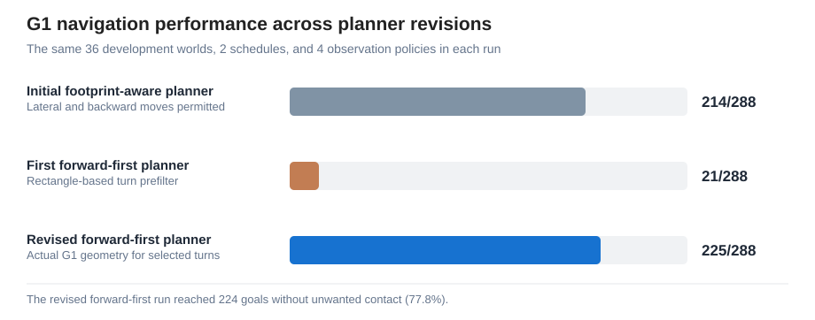
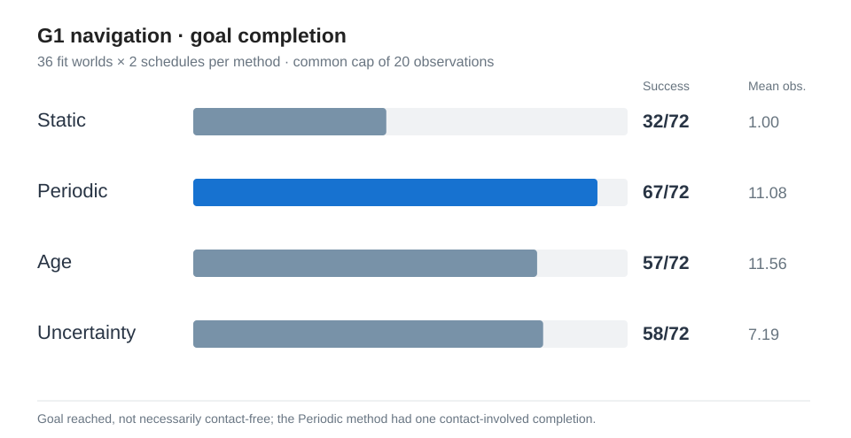
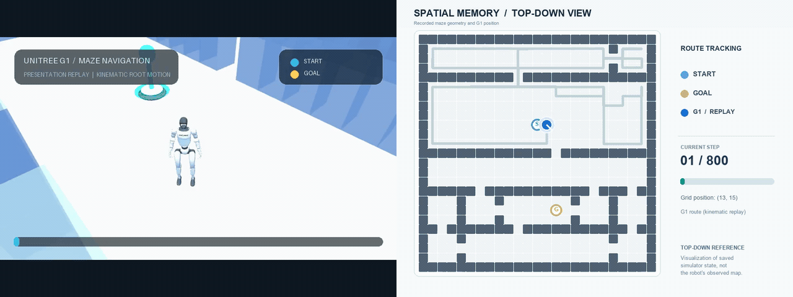
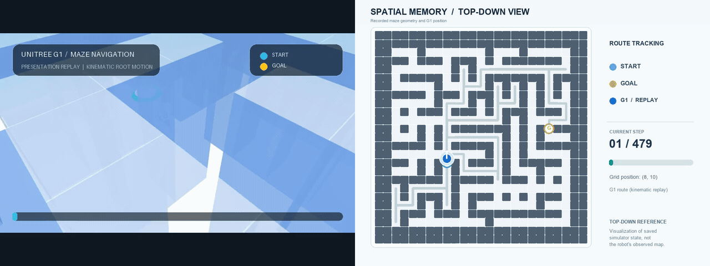

Humanoid Spatial Memory
3D Perception and Navigation in Changing Indoor Environments
Abstract
When should a humanoid robot re-observe changing indoor space to navigate successfully with fewer observations and less movement? I developed a Unitree G1 MuJoCo research testbed combining 3D ray sensing, 2D occupancy memory, A* planning, and a separate emergency safety layer. Correcting an overconservative turn-clearance model improved the initial 288-episode benchmark from 21 to 225 goals; subsequent 61-ray emergency sensing retained 225 goals with zero unwanted contacts. A fully matched extended-horizon rerun reached 286/288 contact-free goals by step 800.
I then developed and evaluated route-decision-aware observation, persistence and expected-information-value models, adaptive cell deadlines, discovery-aware sensing, predictive safety, and causal observation omissions. On the original 72-key development benchmark, Age-5 reached 66/72 with 770 paid scans, versus 800 for Periodic-4 and 850 for Age-4. Change-aware Adaptive Age reduced this to 768, a small descriptive gain. The latest DAO-derived policies reduced paid scans but lost 14–15 goals; they were rejected. The central research challenge remains preserving high completion while jointly reducing sensing and movement. All results are simulated development evidence, not physical walking or independent generalization.
36 saved development environments (12 each of Room Graph, Rectangular Partition, and Maze) · Two schedules per world · Four observation policies · Seed 42 · Initial 80-step benchmark, followed by 400- and 800-step continuations of unsuccessful episodes · Maximum 20 spatial-memory observations · Assumed 0.75 m/grid cell
Research status · November 14, 2026
66/72 goals with 768 paid observations (CAA-Fast/Full, reused FIT72). The latest DAO models did not preserve completion. Follow the research sequence below, including negative results and the proposed Age-5-based next step.
- 01–06 · Original testbed and benchmarks
- 07 · Controlled safety replays
- 08 · Route-decision-aware sensing
- 09 · Persistence, events and EVI
- 10 · Age and CAA
- 11 · Discovery-aware sensing
- 12 · Predictive safety and liveness
- 13 · Discovery / deadline ablations
- 14 · Causal scan omissions
- 15 · Latest FIT72 and next direction
- 16 · Limitations and next steps

An earlier, separate overhead route animation is also available.

01 / Research Question
When is a remembered map worth checking again?
A corridor that was clear yesterday may be blocked by furniture today. A passing person, however, should not necessarily be recorded as a permanent wall. Re-observing everything continuously is expensive, but trusting an old map can lead to failed routes. This project studies how different observation schedules balance navigation success, sensing cost, and map freshness in changing indoor spaces.
I first evaluated established scheduling approaches in a shared, reproducible simulation, then implemented and tested new scheduling and memory models as detailed in Sections 08–15. The same underlying robot model, sensor, planner, environment instances, and observation cap were used for all four policies.
02 / System
From MuJoCo rays to collision-checked actions
- 1. Partial 3D sensingA torso-mounted horizontal ray scanner detects visible surfaces with 61 rays, a 120° field of view, and a 6 m range. Hidden cells remain unknown.
- 2. Spatial memoryMeasurements are projected onto a 2D grid: unknown, free, or occupied. The memory controller decides when another observation is taken.
- 3. Footprint-aware routingA* (pronounced A-star), a shortest-path search algorithm, searches position-and-heading states using remembered obstacles and the public dimensions of G1. Rejected actions are tracked separately from occupancy memory.
- 4. MuJoCo collision checksOnly the chosen movement is checked against 3D geometry before execution. Rotation and translation can be rejected without granting the planner a hidden map.
Walls, changing objects, and moving capsule-shaped pedestrian proxies exist in the MuJoCo scene. These simplified geometric proxies represent moving obstacles, not animated human figures. The agent receives measured occupancy, not simulator obstacle labels or future proxy trajectories. The proxies follow predefined motion and do not react to G1.

03 / Experimental Design
Four policies, matched conditions
All four policies use the same G1 model, sensor, occupancy memory and navigation planner. They differ in one decision: when to request a new spatial-memory observation.
What counts as an observation?
An observation is one authorized scan by a torso-mounted MuJoCo ray sensor. From the robot's current heading, it casts 61 horizontal rays across a 120° forward field of view (±60°), up to 6 m (about eight 0.75 m grid cells). The rays sample free space up to the first measured surface: walls, obstacles or pedestrians block the view behind them. This is a single horizontal scanning plane, not a depth camera or a full 3D point cloud.
Each observation produces a 2D occupancy grid: 0 means observed free, 1 means observed occupied, and -1 means unknown or unobserved. Only measured cells replace their previous memory values; cells hidden behind obstacles retain whatever the robot previously remembered. An observation is not a full map refresh.
0 Free
1 Occupied
-1 Unknown
What does the robot already know?
The experiment assumes accurate self-localization; localization is not learned from the observation rays. The start and goal coordinates are provided, and the simulation maintains G1's current grid position and heading as it moves and turns.
| Information | Known? | Source |
|---|---|---|
| Start coordinates | Yes | Provided at episode initialization |
| Goal coordinates | Yes | Provided as the navigation target |
| Current position (x, y) | Yes | Simulation-maintained robot pose; no localization error is modeled |
| Current heading (yaw) | Yes | Initial heading and executed robot turns |
| Nearby walls and obstacles | Partially | Authorized forward-ray observations and retained occupancy memory |
| Space behind occlusions | Not directly | Only any previously observed information is remembered |
| Future pedestrian motion | No | Future schedules and simulator ground truth are withheld from the agent |
Navigation also receives feedback when a selected movement is rejected by MuJoCo collision checks; rejected actions are tracked separately from the occupancy map. It does not receive collision checks for every possible unselected action.
How the four observation policies work
| Policy | When another memory observation is requested |
|---|---|
| Static | Never after the mandatory observation at step 0. |
| Periodic | Every four steps: 0, 4, 8, 12, 16, …, until the budget is exhausted. |
| Age | When at least 50% of the previously observed cells within a 3-cell radius of the current position were last observed 4 or more steps ago. |
| Uncertainty | When the mean binary entropy ≥ 0.75 bits for previously observed cells within the same 3-cell radius. Entropy is estimated from time since observation and observed occupancy flips; never-seen cells are excluded from this score. |
Static
Observe only at the beginning.
Periodic
Refresh every four steps.
Age
Scan when enough nearby known cells are stale.
Uncertainty
Scan when mean nearby known-cell entropy is high.
Blue timeline cells represent observations, gray cells no observation. The Age and Uncertainty diagrams are illustrative examples of trigger calculations, not recorded rollout data. For both adaptive policies, the decision region is a 3-cell-radius circle around G1, while the actual sensor still looks only 120° forward. Neither adaptive trigger directly considers the goal or planned route. All policies begin with an observation at step 0; the 20-call budget includes that initial scan.
Important distinction: the independent Emergency Safety Sensor is different from a scheduled memory observation. It scans 360° within 2 m using 61 rays every simulation step to protect selected actions, but it does not update the spatial occupancy memory. Even Static still receives this near-field safety scan; the reported memory-observation counts exclude it.
Method definitions: observation scheduling code · MuJoCo ray sensor · frozen Phase 2 evaluation.
I prepared and reused 36 saved development environments, with 12 from each of three floor-plan families: R (Room Graph), containing rooms connected by narrow doors; BP (B-prime Rectangular Partition), containing rectangular rooms connected by selected doorways; and M (Maze), containing narrow, winding corridors. All layouts are based on saved 25 × 25 grids, not newly generated scenes for these comparisons.
The 36 development environments
The following diagrams show the actual saved wall layouts from above. Cyan marks each start position, and gold marks the goal. Select a diagram to view its full-size version. On narrow screens, swipe horizontally to examine individual layouts.


The diagrams show fixed maze geometry and start/goal locations. Moving pedestrian trajectories and the two schedules of obstacle changes are not shown. See all 36 mazes in one image or view their saved identities and coordinates.
How are obstacles and pedestrian proxies placed?
The 25 × 25 base geometry is generated using constrained, seeded procedures rather than arbitrary obstacle placement. For each saved world, two separately seeded dynamic schedules are generated. Each schedule draws exactly one of five categories with an equal 20% selection probability; the actual small dataset is not forced to contain exactly 20% of each type. The same saved worlds and schedules are reused across all four observation policies.
No change
No additional object or pedestrian.
The environment remains unchanged.
Addition
2–4 occupied cells appear at step 2–12.
Previously free cells become blocked.
Removal
2–4 initially occupied cells disappear.
A previously blocked passage may reopen.
Swap
One 2–4-cell footprint is removed while another appears.
Two disjoint footprints change together.
Moving pedestrian
One proxy traverses a path of 4, 6, or 8 cells.
The proxy pauses and moves back and forth.
These five two-frame diagrams are schematic examples, not actual saved maze configurations or trajectories. A footprint describes a set of occupied grid cells, not a count of separate physical objects. Static walls remain in the underlying maze and are deliberately omitted from these small explanatory grids.
| Category | Count | Placement and timing |
|---|---|---|
| No change | 0 added object cells, 0 proxies | Only the unchanged base walls are present. |
| Addition | 2–4 occupied cells | A connected cardinal path of cells is added at a sampled step from 2 to 12. |
| Removal | 2–4 initially occupied cells | A connected footprint present at step 0 is removed at step 2–12. |
| Swap | Two disjoint footprints, each 2–4 cells | One footprint is removed while the other is added at the same step (2–12). |
| Moving | 1 pedestrian proxy | The proxy follows a sampled 4-, 6-, or 8-cell path, reversing at its endpoints; it dwells for 2–4 steps initially and 2–6 steps on later stops. |
Constrained randomness: object footprints and moving paths are sampled from connected, traversable cells in the saved maze while excluding the start and goal. Persistent-object changes must preserve start-to-goal connectivity in both their initial and final static states. Failed proposals are retried under fixed limits rather than changing the selected category to make a scenario easier. Placement does not consult any observation policy, future robot trajectory or navigation result.
Simulation limitation: moving proxies follow precomputed, non-reactive schedules; they do not respond to G1 or behave like real pedestrians. The original schedules describe steps 0–80 and are extended by reversing their saved trace for the longer-horizon replay experiments. These scenes are controlled tests of memory and navigation, not crowds or physically simulated walking.
Implementation and audit trail: dynamic-schedule generator · generation specification · saved-world adapter.
Each world had two saved obstacle-change schedules. Every observation policy ran on the same 72 world–schedule pairs, resulting in 36 × 2 × 4 = 288 episodes for each planner variant. Runs used random seed 42, an 80-step limit, at most 20 observations per episode, and an assumed scale of 0.75 m per cell. The 36 development or fit worlds are not independent held-out test environments, and two schedules from one world are not independent samples.
The simulated G1 moves and rotates kinematically. Its actual MuJoCo collision geometry checks only the action selected by the planner. Rejected actions are recorded separately from observation memory; no hidden world map or collision tests of unselected actions are provided to the planner.
04 / Results
Recovering navigation by correcting turn clearance

| Planner configuration | Goals | Contact-free goals | Goal rate |
|---|---|---|---|
| Earlier planner (lateral/backward moves permitted) | 214/288 | 213/288 | 74.3% |
| Initial forward-first (rectangle-based turn rejection) | 21/288 | 21/288 | 7.3% |
| Revised forward-first (selected-turn MuJoCo check) | 225/288 | 224/288 | 78.1% |
Adding lateral avoidance and a separate emergency safety layer
The selected-turn fix recovered goal completion but did not eliminate moving-obstacle contact. A constrained lateral escape, triggered by measured nearby proxy risk and observed-clear swept space, preserved 225/288 goal completions while improving contact-free completions from 224 to 225. It prevented one of two contact episodes; one Static-policy collision remained. These are results of the matched 288-episode lateral-avoidance comparison, not a claim that sideways motion was enabled everywhere.
I then added a separate short-range emergency scanner, independent of the spatial-memory observation scheduler. In a targeted Static-policy episode, the sensor detected risk ahead at step 52, initiated waiting and a lateral escape, and reached the goal at step 76 without unwanted contact. The first validated 181-ray scanner was optimized from a 6.127 ms to a 0.483 ms median scan time (12.7× faster) in a five-pair benchmark of this one episode. The subsequent 61-ray, 360°, 2 m configuration was evaluated across all 288 matched 80-step episodes, rather than being assumed safe from the single case.
| Configuration | Goal completions | Contact-free goals | Episodes with unwanted contacts |
|---|---|---|---|
| Revised forward-first, before lateral avoidance | 225/288 | 224/288 | 2 |
| After constrained lateral avoidance | 225/288 | 225/288 | 1 |
| With independent 61-ray emergency sensing | 225/288 | 225/288 | 0 |
The full 61-ray safety evaluation eliminated the remaining 234 unwanted proxy geometry contact pairs across six contact states. The overall goal count stayed at 225 because the Static R 80000001 / schedule 1 run became successful, while the Periodic M 80030007 / schedule 1 run no longer reached its goal within 80 steps after safety waits. The emergency scanner ran every simulated step without updating spatial memory, requiring 13,731 scans (837,591 raycasts). Thus fewer contacts did not imply a higher goal count or zero sensing cost.
Full 288-episode safety evaluation · Goal tradeoff and failure analysis
Revised forward-first results by observation policy
The four policies differ in when they refresh their observed map. The corrected forward-first planner and the same safety checks are used for every policy.
| Observation policy | Goals | Contact-free goals | Mean observations |
|---|---|---|---|
| Static | 36/72 (50.0%) | 36/72 | 1.00 |
| Periodic | 67/72 (93.1%) | 66/72 | 11.11 |
| Age | 66/72 (91.7%) | 66/72 | 11.79 |
| Uncertainty | 56/72 (77.8%) | 56/72 | 8.28 |
Revised forward-first results by maze family
| Family | Initial forward-first | Revised forward-first | Contact-free revised |
|---|---|---|---|
| R: Room Graph | 0/96 | 74/96 | 74/96 |
| BP: Rectangular Partition | 21/96 | 88/96 | 88/96 |
| M: Maze | 0/96 | 63/96 | 62/96 |
The revised planner selected 3,964 turn actions; the actual MuJoCo collision shield rejected three of them, with zero collision queries for unselected actions. Two episodes recorded unwanted contacts with moving capsule-shaped pedestrian proxies; one nevertheless reached the goal and is excluded from contact-free completion. These remain simulation results on saved development environments, with no claim of physical walking or real-world safety.
Earlier observation-scheduling baseline
Before introducing forward-first behavior, I compared the observation strategies using a more permissive kinematic planner that allowed lateral and backward translation. The results below are preserved for transparency, but they should not be conflated with the revised forward-first experiment.

For the historical baseline, paired world-clustered bootstrap estimates gave a Periodic minus Uncertainty goal-completion difference of +12.5 percentage points (95% confidence interval: +2.8 to +23.6 points). This estimate does not describe the revised forward-first run.
05 / Failure Analysis
Why did forward-first navigation initially fail?
Changing the default movement policy to forward travel with explicit in-place turns first reduced goal completion to only 21/288. All 96 Room Graph episodes and all 96 Maze episodes stopped without a successful move or turn. Initially, this looked like a problem with narrow corridors.
I investigated all 36 saved starting locations. Using the actual G1 MuJoCo collision geometry, the robot could turn 90 degrees in either direction at all 36 starts, including with each scene's initially saved obstacles and pedestrians. However, the A* planner's axis-aligned bounding-box (AABB) approximation incorrectly rejected both turns at 12/12 R starts, 12/12 M starts, and 7/12 BP starts. A rectangle around the robot's rotated footprint can overlap a nearby wall cell even when the actual robot clears it.
Instead of querying every possible turn against hidden simulator geometry, I removed the AABB pre-rejection of turns only. The planner now proposes a turn from its observed-map state, and the actual MuJoCo model checks only the selected turn. If that turn fails, attempted-action feedback prevents repeated selection until relevant local evidence changes. Translation clearance still uses the original footprint approximation. This preserves the separation between what the robot knows and what the simulator knows.
A diagnostic allowed one initial backward step in selected cases, but that was not the main fix. Under a full-map diagnostic assumption, only two Room Graph mazes gained a feasible route after backing up. The large recovery to 225/288 came from changing turn-clearance handling while keeping forward-first navigation.
The improvement does not remove all failure modes. Two revised-run episodes recorded unwanted contact with moving capsule-shaped pedestrian proxies. These are geometric stand-ins for people, not articulated or reactive human models. Incomplete observations, changing obstacles, grid discretization, and the 80-step horizon still constrain performance. The original planner's 214/288 result used different movement permissions, so it is retained as a historical comparison rather than evidence that one observation policy is universally best.
Failure replay: contact with a moving capsule proxy
This saved example comes from the Maze environment M:80030007, obstacle schedule 1, using the Periodic observation policy. G1 reached the goal in 76 simulation steps, but the evaluator recorded unwanted contact with the moving proxy. This is a failure of contact-free navigation, even though the navigation goal was reached.

The source run recorded 234 unwanted capsule-proxy contact pairs across its trajectory; this count is not 234 distinct collisions. Since the full 288-episode run did not save per-frame poses, this video was reconstructed by deterministic replay and checked against the saved episode's action events and outcome metrics. Replay validation and visualization notes document the reproduction. Open the full GIF (approximately 63 MB).

Lateral avoidance: before and after
To address an observed proxy-contact failure, I added a conservative lateral sidestep option that uses observed free space when a moving capsule proxy poses an imminent risk. In the M:80030007 / schedule 1 / Periodic case, this intervention avoided the previously recorded contact without changing the episode's goal-completion outcome. In the matched 288-episode comparison, goal completions remained 225/288, while contact-free goal completions improved from 224/288 to 225/288. Episodes with unwanted proxy contact decreased from 2 to 1, and the summed proxy contact-pair count decreased from 468 to 234. Contact pairs are simulator geometry contacts, not distinct collisions.

Independent emergency safety sensing
The remaining recorded proxy-contact case was R:80000001 / schedule 1 / Static / seed 42. Because the Static spatial-memory policy observes only at step 0, it could not refresh its map when a proxy approached later. I introduced an independent, continuous emergency safety sensor: 181 MuJoCo rays over 360° with a 2 m range at each simulation step. These short-range readings support immediate safety decisions but do not update the Static spatial memory; its observation count remains one.
In this single evaluated episode, the sensor detected the proxy at (11,5) from G1's position (10,4) at step 52, before a hazardous move into (11,4). G1 waited, then sidestepped to (10,5) at step 54, and reached the goal at step 76 with zero unwanted proxy-contact states or contact pairs. The saved baseline did not reach the goal and recorded six contact states and 234 contact pairs. The collision shield still checks only the selected action, and the controller does not access future proxy trajectories.

Safety sensor optimization and computational cost
The initial safety implementation added significant computation: an earlier five-pair benchmark measured a median episode time of 177.6 ms without versus 718.1 ms with the sensor, with a median scan time of 6.26 ms. Profiling subsequently identified roughly 35,000 Python-loop grid conversions per scan as the dominant bottleneck. I replaced individual MuJoCo ray intersection calls with batched mj_multiRay and vectorized the sampled-point grid conversion, preserving 181 rays, 360° coverage, 2 m range, and 0.075 m sampling.
In a new five-pair optimization benchmark of this same episode, median scan time fell from 6.127 to 0.483 ms (92.1% reduction; 12.7× faster), and median total episode time fell from 665.2 to 236.3 ms (64.5% reduction). The optimized 181-ray version reproduced the saved safety trajectory, observations, and interventions: goal at step 76, zero unwanted proxy contacts, and one Static memory observation. The optimized episode still took longer than the 160.7 ms no-sensor benchmark in this new measurement set; the safety sensing is not computationally free.
Experimental 91-ray and 61-ray configurations reduced median scan time further to 0.317 ms and 0.267 ms, respectively, and both completed this same episode without contact. They are not the default because one successful scenario cannot establish that sparser angular sampling reliably detects unseen or occluded moving proxies. At that single-episode optimization stage, the 181-ray version remained the default. The later full matched benchmark adopted the separately evaluated 61-ray configuration; adaptive safety ray counts were not enabled. These measurements are from a single development episode, not evidence of safety across other environments or of real-world robot performance. The condition is Static Spatial Memory + Continuous Safety Sensing, not pure Static.
Emergency safety sensor design and reproduction · Single-episode comparison · Optimization report · Optimization benchmark
06 / Extended-Horizon Evaluation
Was the 80-step limit masking successful navigation?
Even after adding the independent emergency sensor, 63 of 288 episodes had not reached the goal at the original 80-step cutoff. I reran only these 63 previously unsuccessful episodes with the same saved worlds, schedules, policies, seed, safety system, and observation budget, changing only the maximum episode length from 80 to 400 steps. The recorded trajectory prefixes through steps 0–80 matched in all 63 cases, confirming that the extensions did not alter the initial behavior. Previously successful episodes were not rerun.
| Follow-up horizon | Episodes evaluated | New goals reached | Still unsuccessful | Unwanted-contact episodes |
|---|---|---|---|---|
| 80 → 400 steps | 63 | 60/63 | 3 | 0 |
| 400 → 800 steps | 3 | 1/3 | 2 | 0 |
The 60 contact-free completions at the 400-step horizon reached their goals between steps 82 and 379, at a mean of 151.73 steps. All three remaining 400-step failures used Static spatial memory. Of the original 288 matched episodes, 225 had reached the goal by step 80; combining those archived successes with the extended runs gives 285/288 by step 400 and 286/288 by step 800. These are cumulative outcomes from targeted continuations, not new full 288-episode runs at the longer horizons.
400-step extension report · Trace-prefix verification
What happened when the last three episodes were given 800 steps?
The final three Static-policy episodes were extended to 800 steps, with their recorded prefixes through step 400 preserved. The maze M 80030008, schedule 1, Static reached its goal at step 479, with no unwanted contact. However, the two rectangular-partition runs BP 80010004, schedule 0 and schedule 1, Static still did not reach the goal by step 800; both ended at grid position (1, 23), with zero unwanted contact states or pairs.
Detailed replay diagnostics show that the BP runs did move and revisit locations before stopping—they were not stationary from the beginning. With schedule 0, G1 reached a constant final pose from step 460 through 800; with schedule 1, it remained at its final pose from step 440 through 800. In both runs, the planner reported no_feasible_forward_route throughout the stationary suffix. The replays did not identify a short exact repeated position-and-heading cycle before this terminal condition. In other words, simply increasing the deadline could not resolve the route-selection limitation of these Static-policy episodes.
| Saved world and schedule | 800-step outcome | Key diagnostic |
|---|---|---|
BP 80010004 · schedule 0 · Static | Not reached | No feasible forward route from step 460 |
BP 80010004 · schedule 1 · Static | Not reached | No feasible forward route from step 440 |
M 80030008 · schedule 1 · Static | Reached at step 479 | Contact-free goal |

no_feasible_forward_route. No unwanted contacts were recorded.
The GIFs are presentation-speed replays of saved simulation records; animated limb motion is visual only. The right-hand maps visualize saved evaluator geometry and pose, not the robot's observed occupancy memory. 800-step follow-up report · Replay diagnostics and trajectory data
07 / Causal Replay & Full Horizon
Why the same safety system can rescue one route and harm another
After the earlier targeted extensions, I replayed the entire 288-episode matrix at an 800-step horizon, adding separate timers for observation decisions, G1-facing A* planning and memory updates. All 288 prefixes through step 80 and all 63 previously recorded 400-step prefixes matched. The full rerun confirmed 286/288 contact-free goals and the same two residual Static failures. The longer horizon is a different evaluation condition, not a replacement for the 80-step benchmark used below.
Controlled safety intervention replays
| Case | Without overrides | With overrides | First divergence |
|---|---|---|---|
| M80030007 / Periodic | Goal at 64 | H80 failure | Step 38 |
| R80000001 / Static | H80 failure, 234 pairs | Goal at 76, 0 pairs | Step 52 |
In the Periodic case, two safety waits changed the position at the step-40 observation despite identical scan timing. The new observation viewpoint led to a longer detour. Suppressing all overrides while retaining the emergency scans reproduced the earlier 64-step success; suppressing only the first waits did not reliably restore it. In the Static case, bypassing the step-52 wait reproduced the six contact states, while a one-step delay of the lateral escape preserved the contact-free result. The emergency layer matters through action choice, not by writing to memory.
Full H800 evaluation · Periodic causal replay · Static causal replay · Recorded GIFs and intervention ledger
08 / Route-Decision-Aware Observation (RDAO)
Can the robot predict whether an observation will change its route?
I introduced a dedicated 72-key development benchmark (FIT72): 36 previously inspected maze layouts, each with two correlated pedestrian schedules, seed 42, horizon 80, and at most 20 paid scans including step 0. All scheduling comparisons retain the original 61-ray emergency safety layer, actual G1 planner and selected-action shield unless explicitly noted. Periodic-4 and Age-4 each reached 66/72 goals. The research target is to improve that completion count or retain it with fewer paid observations, without adding unwanted contact. Reduced movement and total sensing are secondary objectives.
RDAO combines public-map visibility, local staleness, counterfactual route/action relevance, and timing/budget weights. It uses only the robot's remembered map, pose and goal, rather than evaluator knowledge of the changing world. A post-hoc dose-matched periodic control is descriptive only, not an equivalent online policy.
| Policy | Goals / 72 | Mean scans | Mean steps |
|---|---|---|---|
| Periodic-4 | 66 | 11.111 | 42.208 |
| Age-4 | 66 | 11.806 | 40.486 |
| RDAO v1 | 57 | 9.111 | 44.736 |
| Dose-matched periodic (post-hoc) | 58 | 8.56 | |
| First safe-action gate | 61 | 8.819 | 44.264 |
| Every safe-action gate | 58 | 8.583 | 44.653 |
| Footprint only | 59 | 9.931 | 44.819 |
| v2 next-viewpoint | 61 | 9.556 | 44.306 |
| v2.1 angular quality | 59 | 8.569 | 45.819 |
| v2.2 decision protection | 59 | 9.583 | 44.542 |
The no-route-relevance and no-visibility ablations both reached 66 goals, but used 14.79 and 12.33 observations on average. A strict score can suppress useful information; conversely, a scan can alter the next action in an unhelpful way. In the controlled M80030010 experiment, omitting just the step-3 observation (with real subsequent sensing) changed an H80 failure with 20 scans into a 28-step success with six scans. Adding a step-2 scan did not rescue the original schedule. This is a selected-world causal finding, not a hindsight timing rule.
Subsequent interventions tested retaining a prior forward action only when the updated public map and measured clearance allowed it, footprint visibility, predicted next viewpoints, angular quality and explicit protection of decision-critical regions. The first-action gate rescued four episodes from two distinct worlds but increased common-success steps by 74 in total. Footprint-only rescued two different episodes, but increased overall paid scans by 59. v2 was strongest for completion among the viewpoint variants; v2.1 saved scans at the expense of goals, and v2.2 lost two goals relative to v2. None surpassed both original references. The original RDAO scheduler also averaged approximately 316 ms per episode, a significant computational cost.
RDAO v1 and ablations · Timing factorial · Online-action gate · Visibility-only outcomes · Feature separability · v2–v2.2 comparison · Closure and next hypothesis
09 / Events, Persistence & Information Value
Modeling memory decay and the cost of delaying an observation
Event-triggered sensing (A)
Adding a real selected-action rejection trigger with a cooldown to Periodic or Age did not improve their aggregate performance. Periodic+Event reached 64/72, using 11.306 scans; Age+Event reached 66/72, using 11.889. The observed-map no-route trigger never fired in this dataset. Both variants were frozen as negative results.
Persistence-aware memory (B) and expected value of information (C)
B estimates asymmetric occupancy transitions from previously authorized readings: a cell can change from free to occupied at rate a, and occupied to free at rate b. With elapsed time Δt and equilibrium occupancy π = a/(a+b), the predicted probability is:
Here q is the confidence immediately after the last observation (0.05 for free, 0.95 for occupied). Rates are estimated from observed endpoint changes and exposure time. Conservative hysteresis protects recently occupied cells; inferred changes are logged separately from actual readings. This is an approximate occupancy model, not semantic identification of furniture or people.
C estimates the expected navigation regret of not observing a shortlisted uncertain cell. It compares public A* routes under free/occupied hypotheses, prices the extra scan and computation, and grants a scan only if estimated delay regret exceeds cost. C0 evaluates three cells, requiring at most seven public A* calls. The single-cell, immediate-action approximation is deliberately bounded but can omit later relevant information.
| Policy | Goals / 72 | Mean paid scans | Mean H80 steps |
|---|---|---|---|
| Periodic+Event | 64 | 11.306 | 42.931 |
| Age+Event | 66 | 11.889 | 40.569 |
| B + original Age | 66 | 11.806 | 40.486 |
| C0 | 46 | 5.375 | 53.306 |
| B+C | 46 | 3.639 | 53.694 |
| C-K (five candidates) | 54 | 6.292 | 51.139 |
| Topology3-d | 52 | 8.417 | 49.681 |
| Multi-step EVI (K) | 57 | 15.708 | 45.194 |
| Multi-step EVI (K + visibility) | 57 | 15.778 | 45.153 |
| Multi-step EVI (topology) | 57 | 15.792 | 44.333 |
| Multi-step EVI (topology + visibility) | 57 | 15.792 | 44.333 |
B matched the baseline trajectories, but the occupancy prediction was not better calibrated than last-write memory (Brier score 0.1515 versus 0.1405). C and B+C shared the same 26 failure keys; among comparative failures, most decision values were zero, despite unused budget. Read-only analyses identified omitted route candidates, and controlled real-scan interventions rescued a specific M80030004 schedule, but did not establish a generally useful rule.
Broader candidate coverage and bounded lookahead
I tested a wider shortlist (K=5), route-priority ranking, topology-aware screening using separators and articulation points, and corrected an invalid early topology fixture/classifier gate before FIT execution. The accepted topology variant prioritized route connectivity over immediate action alone. The completed wider/topology screens improved on C0 but stayed below the simple baselines.
Multi-step EVI compared scanning now (informed motion + scan price), delayed sensing after one to three predicted route moves, and proceeding without information. The future pose and visibility were predictions from the public raster, not live sensor queries. Four variants all reached 57 goals but used about 15.7–15.8 scans. Predicting future visibility gave no completion gain; a separate H=1 versus H=3 depth ablation also did not establish an advantage. I retained the negative results rather than selecting a favorable subset.
Event results · Persistence and EVI design · Failure analysis and actual-scan interventions · Candidate coverage · Invalidated topology gate · Corrected topology evaluation · Multi-step EVI · Depth ablation
10 / Age-Based Scheduling
A small improvement over both simple references
Rather than replacing the Age policy entirely, I isolated simpler modifications. Directional Age considers whether stale cells are in the forward field of view. Route-aware Age protects observations that would verify cells near a nominal route. Cadence variants change age thresholds, minimum time gaps or movement/heading conditions.
Completion and sensing tradeoffs
Route rescue maintained all 66 Age-4 successes with two fewer scans, but still used more than Periodic. Route clock improved mean movement steps relative to Age-4 but requested substantially more scans. Age-5 (increase the stale-cell deadline from four to five, without changing the local fraction) reached 66/72 with 770 scans, versus 800 for Periodic-4 and 850 for Age-4. This meets the descriptive sensing/completion target, but common-success steps increased by 0.391 versus Periodic and 2.254 versus Age-4. Age-5 is therefore a strong frozen control, not demonstrated joint dominance.
Change-aware Adaptive Age (CAA)
CAA replaces a single deadline with per-cell deadlines. Cells recently detected changing receive age 4; ordinary cells receive age 5; cells with repeated, suitably spaced unchanged observations can receive age 6. Stability requires observed evidence, not merely the absence of a new reading. The planner still receives only actual last-write occupancy.
Changing cell → 4 steps
Prior observed state changes motivate a shorter deadline.
Stable cell → 6 steps
At least three actual unchanged reobservations over a sufficient span; otherwise use 5.
| Policy | Goals / 72 | Total paid scans | Mean steps | Combined rays |
|---|---|---|---|---|
| Periodic-4 | 66 | 800 | 42.208 | 234,179 |
| Age-4 | 66 | 850 | 40.486 | 229,665 |
| Age-5 | 66 | 770 | 42.278 | 232,654 |
| Age-6 | 59 | 707 | 48.361 | 255,529 |
| CAA-Fast | 66 | 768 | 42.278 | 232,532 |
| CAA-Full | 66 | 768 | 42.278 | 232,532 |
| CAA-Slow | 66 | 770 | 42.278 | 232,654 |
CAA-Fast and Full meet the original descriptive target by two scans relative to Age-5 (0.26% fewer). The saving occurs in one maze/schedule; the common-success distance increases slightly (0.023 m on average), and the paired scan-difference confidence interval includes zero. Thus the effect is too small and concentrated to support an independent improvement claim.
Directional Age · Route-aware Age · Cadence experiments · Frozen Age-5 · CAA protocol and results
11 / Discovery-Aware Observation (DAO)
Separating exploration from memory verification
Age computes the stale fraction among known cells, excluding never-observed cells. This can miss a promising view into a new room and can also request a scan for old cells outside the sensor's reachable view. I introduced public raster ray tracing with the same 61 angular hypotheses as the memory sensor. Frontier rays stop at the first unknown, while optimistic rays pass through unknown space until a remembered obstacle. Neither footprint is a calibrated physical bound.
| Policy | Scans | New cells found | Changed-known detected | Unchanged-only |
|---|---|---|---|---|
| Age-4 | 778 | 694 | 21 | 83 |
| Age-5 | 698 | 630 | 30 | 64 |
| CAA-Fast / Full (each) | 696 | 630 | 30 | 62 |
New-cell and changed-known counts can overlap. Discovery was much more frequent than detected state changes; it does not by itself indicate navigation benefit. Offline point-route recomputation changed the nominal route after 319 Age-4 and 298 Age-5 scans, but this is not the executed G1 action planner.
Define A as the Age-5 request, D as at least five predicted frontier unknown cells, V as stale-known verification (at least three cells or half a nonempty known footprint), E as a discovery opportunity after a minimum three-step gap, and B as an oldest-local-cell fallback at age 10. ER additionally requires a frontier unknown near the next five public route moves.
| Variant | Request condition | Purpose |
|---|---|---|
| DAO-Veto | B OR (A AND (D OR V)) | Suppress low-yield Age requests |
| DAO-Trigger | B OR A OR E | Observe new discovery opportunities |
| DAO-Route | B OR A OR ER | Trigger route-related discovery |
| DAO-Combined | B OR (A AND (D OR V)) OR E | Combine veto and triggering |
Engineering validation used twelve hand-defined scenes and four schedulers (48 episodes) plus 120 separate actual fixture scans. A versioned compatibility guard treats a route starting in a remembered occupied cell as unavailable without clearing memory from truth. All variants reached 10/12 goals, but contact cases in the pedestrian fixture prevented safety acceptance. Frontier prediction underestimated actual new-cell counts (MAE 26.293), while optimistic prediction had MAE 7.784 in these navigation scans. The results are diagnostic, not independent efficacy tests.
Independent evaluation infrastructure
I also designed lineage-level generation and admission checks: layout/corridor topology, connectivity, exact and near-duplicate detection under geometric symmetries, and disjoint development/sealed inventories. Two sets of twelve TEST-only generator fixtures exposed and corrected a connectivity defect. No new production population was generated or used. Statistical simulation showed that paired two-schedule data must be analyzed by maze lineage; nominal small-sample intervals can undercover, while conservative finite-sample bounds require substantially larger cohorts. A production pilot remains blocked by safety qualification, admission/custody, and adequately powered inference.
DAO design and retrospective audit · Actual-sensor integration · Generator and admission · Connectivity correction · Independent study protocol · Pilot and statistical gates
12 / Predictive Safety & Liveness
A separate engineering study of pedestrian contact timing
The hand-scene contacts motivated a separate safety investigation, without changing the observation schedulers. Instrumented replay distinguished actual executed contact from rejected collision queries. All 165 distinct actual contact episodes in the first predictive-safety formal matrix began when the emergency scanner synchronized the pedestrian proxy to its next discrete world state, before the robot could select its action. A direction-only predictor missed possible reversals. This is a kinematic teleport/timing limitation, not continuous human motion.
Predictive v1 uses stay/cardinal reachable sets, retained tracks, swept-footprint clearance and a two-transition endpoint exclusion. It eliminated the archived regression contacts but was too conservative: in head-on/narrow scenes a safe lateral move was excluded, and waiting introduced new contact states. Across the first 416-run matrix it reduced goals from 184 to 152 and did not satisfy the safety gate. Waiting without a certified action is not necessarily safe.
Risk-ranked emergency safety (RES)
I separated the effect of shortening the prediction horizon to one transition (RES-H1) from a ranked fallback among uncertified but admissible actions (RES-Risk). The fallback avoids entering new measured overlap and compares measured sweep risk, predicted endpoint risk and separation before goal distance. Neither version guarantees physical safety.
| Safety | Goals / 36 | Contact-free goals | Onsets beyond proven first | Paid scans |
|---|---|---|---|---|
| Original | 36 | 26 | 10 | 133 |
| Predictive v1 | 24 | 15 | 48 | 226 |
| RES-H1 | 35 | 32 | 0 | 143 |
| RES-Risk | 17 | 17 | 0 | 269 |
| RES-Full | 35 | 32 | 0 | 143 |
RES-H1 and Full lost only one goal, Periodic-4 in the alternating crossing fixture: two forward moves and 26 turns in 28 steps. A rotation-cycle escape heuristic chose an already-certified translation when a heading repeated at the same cell. The 126-episode comparison (42 per version) showed 40/42 goals for H1 but only 36/42 with escape; this shifted oscillation into movement and was rejected.
Phase Wait: breaking the cycle with one certified wait
Instead of forcing lateral movement, I tried retaining the heading for one independently certified wait when a rejected forward translation would cause another cyclic turn. The wait is allowed only once during a stationary dwell; ordinary turns and uncertified waits are left unchanged. On the 144-episode compact matrix, the new method reached 48/48 goals and 45 contact-free goals with three proven first-transition contacts. This passed the compact gate, allowing the frozen expansion.
| Safety | Goals / 208 | Contact-free goals | Onsets beyond proven first | Paid scans | Combined rays |
|---|---|---|---|---|---|
| Original | 184 | 151 | 29 | 908 | 217,465 |
| Phase Wait | 180 | 172 | 0 | 953 | 225,029 |
The expansion eliminated all recorded nonfirst onsets and increased contact-free completion, but lost four goals relative to the original and increased sensing. The remaining eight onsets were in the explicitly declared unavoidable first-transition fixture. The candidate failed the predeclared full adoption gate. Its separate results are retained; the original FIT72 safety configuration remains unchanged. The two conditions are not pooled or used to claim physical safety.
Contact-stage audit · Predictive v1 · RES comparison · Cycle escape · Phase Wait compact · Phase Wait expansion · Recorded contact evidence
13 / Attenuation, Route Relevance & Deadline
Does a better estimate of discovery actually improve scheduling?
To bridge frontier and optimistic footprints, I assigned each unknown cell a weight qk, where k is the minimum number of distinct preceding unknown cells along any ray reaching it. Summing deduplicated weights estimates discovery count. Fixed q=0.5 and q=0.8 are heuristic transmission factors, not learned probabilities.
A read-only audit reconstructed the pre-scan maps for 1,861 recorded readings across the 416-phase-wait expansion episodes, including 416 initial scans. Among the 745 noninitial Phase Wait observations, optimistic had the lowest count MAE, but the q=0.5 estimate had the fewest disagreements at the five-cell request threshold. Original safety showed the same ranking. This selected-scan audit does not establish accuracy at denied decisions.
| Estimator | Mean absolute error | Signed error | Threshold disagreements / 745 |
|---|---|---|---|
| Frontier | 10.953 | −10.515 | 55 |
| q=0.5 | 8.263 | −7.661 | 18 |
| q=0.8 | 5.211 | −4.259 | 24 |
| Optimistic | 2.267 | −0.224 | 37 |
The subsequent 416-episode DAO-Veto ablation replaced only the discovery term with q=0.5, 0.8 or 1. All three variants added six scans (104 to 110) under each safety version, while 23 common successes retained the same steps and distance. Better prediction did not imply better navigation.
Route Gate and Deadline
Route Gate suppresses the discovery component if no frontier unknown is near an available nominal route. Deadline instead delays an old-cell fallback when a route exists, no stale cell is predicted visible, and fewer than ten steps have elapsed since the last paid scan. Joint applies both. The verification term and Age-5 anchor stay unchanged. The deadline bounds deferral of an active request, not the age of every cell.
| Policy | Goals / 26 | Paid scans | Nonfirst onsets | Combined rays |
|---|---|---|---|---|
| Periodic-4 | 23 | 100 | 4 | 26,047 |
| Age-4 | 23 | 118 | 3 | 27,145 |
| Age-5 / CAA-Full (each) | 23 | 106 | 3 | 26,718 |
| DAO-Veto | 23 | 104 | 5 | 26,535 |
| Route Gate | 23 | 104 | 5 | 26,535 |
| Deadline / Joint (each) | 23 | 99 | 5 | 26,230 |
| Policy | Goals / 26 | Paid scans | Nonfirst onsets | Combined rays |
|---|---|---|---|---|
| Periodic-4 | 22 | 108 | 0 | 28,243 |
| Age-4 | 22 | 139 | 0 | 29,768 |
| Age-5 / CAA-Full (each) | 23 | 108 | 0 | 27,023 |
| DAO-Veto | 23 | 104 | 0 | 26,779 |
| Attenuated variants (each) | 23 | 110 | 0 | 27,145 |
| Route Gate | 23 | 104 | 0 | 26,779 |
| Deadline / Joint (each) | 23 | 102 | 0 | 26,657 |
Deadline saved five and two paid scans relative to DAO-Veto under the two safety conditions, with identical common-success steps and distance. Route Gate produced no savings. These repeated hand scenes suggested a useful mechanism but did not establish FIT72 superiority. Original safety still has contacts; Phase Wait remains unapproved.
Prediction accuracy · Attenuation navigation · Route/Deadline navigation · Rule definitions
14 / Causal Observation Omission
Which observations can be removed without making navigation worse?
I replayed 52 untreated Deadline episodes and all 149 single noninitial observation omissions on the reused 26 hand scenes under two safety conditions. Every intervention began from an identical pre-target prefix, canceled exactly that paid scan before sensing, and resumed the frozen scheduler. No omitted reading or evaluator information entered the online policy. A scan could be rescheduled later, so removing one request does not necessarily save a scan.
149 single-scan interventions
| Safety | Interventions | No-worse savings | Goal harms | Increased nonfirst onsets | Unchanged pose/action |
|---|---|---|---|---|---|
| Original | 73 | 23 | 0 | 5 | 57 |
| Phase Wait | 76 | 26 | 1 | 0 | 70 |
All six omission cases with goal or contact harm had at least one changed-known cell in the omitted reading; 17 of the 49 saving cases also had a changed-known cell. The realized reading is unavailable before a scan, so it cannot directly define a scheduler. Large numbers of newly discovered cells also appeared in removable observations.
Reconstructing public features before observing
I reconstructed the prior paid history, map age, known upcoming route cells, recent detected changes, stale occupied cells near the route, previous-view overlap, displacement and heading. Eleven fixed diagnostic masks were assessed against frozen intervention outcomes after saving the public features. A known, apparently stable route prefix after the first noninitial scan captured 21 of the no-worse saving cases and no observed goal/contact or common-movement harms; adding a previous-no-change condition captured 19. Some selected cases still increased paid scans. Identical aggregate signatures can yield opposite outcomes, including crossing versus sudden-stop fixtures. No mask is a safety certificate or a validated policy.
| Mask | Selected grants | No-worse savings | Goal/contact harms | Paid increases |
|---|---|---|---|---|
| Known prefix | 49 / 52 | 15 / 18 | 2 / 1 | 6 / 7 |
| Stable prefix | 38 / 41 | 11 / 13 | 0 / 1 | 2 / 4 |
| Stable prefix, later | 31 / 33 | 9 / 12 | 0 / 0 | 2 / 3 |
| Later + previous no change | 25 / 31 | 7 / 12 | 0 / 0 | 0 / 1 |
Causal omission results · Public-feature audit · Feature and mask definitions
15 / Direct FIT72 Comparison
The latest results: protecting completion must come first
The encouraging hand-scene Deadline findings did not transfer to the harder original FIT72 development benchmark. I implemented two additional history vetoes: Stable protects the first noninitial scan and an existing grant once ten steps have elapsed, but otherwise suppresses Deadline grants when the stable-prefix-later mask holds; Stable-Quiet additionally requires no known-cell change at the previous scan. Both use only the prior authorized history.
All 58 correctness tests, 432 navigation episodes and 216 reference parity checks completed. The original emergency safety layer, 61-ray paid sensor, planner, 80-step limit and 20-scan cap were identical. None of the three DAO-derived policies exceeded the references.
Latest FIT72: goal completion and paid sensing
| Policy | Goals / 72 | Paid scans | Mean H80 steps | Blocked attempts | Combined rays |
|---|---|---|---|---|---|
| Periodic-4 | 66 | 800 | 42.208 | 47 | 234,179 |
| Age-4 | 66 | 850 | 40.486 | 36 | 229,665 |
| Age-5 | 66 | 770 | 42.278 | 63 | 232,654 |
| Deadline | 52 | 577 | 49.417 | 331 | 252,235 |
| Stable | 51 | 571 | 49.639 | 321 | 252,845 |
| Stable-Quiet | 51 | 571 | 49.639 | 323 | 252,845 |
All arms recorded zero unwanted contact pairs. Deadline lost 14 goals against each reference and rescued none. Stable and Stable-Quiet lost 15 and rescued none. In the 52 common successes against Age-5, Deadline required about 6.04 additional steps and 1.27 m additional travel. Its mean scheduler time was 107.6 ms per episode, versus 2.43 ms for Age-5 on the latest instrumented comparison. More blocked attempts and longer episodes drove total rays up even as paid observations fell. These results do not isolate a particular causal failure mechanism, but strongly reject the tested observation-veto approach on FIT72.
Next direction: Route-Adaptive Age (RAA)
The next planned family starts from frozen Age-5, rather than aggressively suppressing a weaker DAO policy. It will investigate early Age-4 requests when route-relevant uncertainty warrants a scan, a narrowly bounded one-step deferral of redundant Age-5 requests with first-scan and deadline protection, and their combination. Disabled mechanisms should reproduce Age-5 exactly. This is a proposed direction, not an implemented or evaluated result in this snapshot.
The immediate descriptive goal is at least 67/72 goals without contact, or 66/72 with at most 769 paid scans and no unwanted contact, beating the strong Age-5 control. Preferably the model should also improve combined rays and matched successful-route costs. The stronger scientific goal remains independent evaluation on new lineages; no FIT-only result is a guarantee of generalization.
Latest FIT72 report · Full metrics and pair comparisons · Frozen comparison protocol · Research snapshot 9333928
16 / Limitations & Next Steps
Toward more realistic humanoid navigation
- No physical walking: G1 uses kinematic waypoint translation and turning. Joint-level gait, balance, falls, and safe foot placement are not simulated.
- 2D memory from 3D rays: The sensor uses one horizontal ray plane. There is no depth-camera noise, vertical scan, or 3D voxel memory.
- Simplified human stand-ins: Moving pedestrians are represented by non-reactive capsule-shaped geometric proxies, not articulated human models.
- Development-only comparison: All 36 saved fit worlds and a single random seed were used across successive planner revisions. Results should be tested on unseen layouts and additional random seeds.
- Long-horizon Static failures: Extending the episode deadline did not resolve two BP
80010004runs; both eventually returnedno_feasible_forward_routewithout reaching the goal. Future work should investigate replanning, stale memory, and route-feasibility feedback separately. - Uncalibrated scale: The 0.75 m/cell grid remains an explicit modeling assumption.
The latest development benchmark favors an Age-5-based next direction (Section 15), rather than further tuning DAO or the rejected Phase Wait safety layer on the same scenes. The two schedules per layout are correlated; repeated FIT72 iterations are exploratory, not held-out validation. Before an independent study, resolve safety qualification, lineage admission and custody, and a feasible statistical design. Future work also includes realistic pedestrian trajectories, richer 3D perception and physically actuated humanoid walking. The work currently evaluates simulated spatial memory and navigation, not deployable locomotion or real-world safety.
Code, data & reproducibility
Source code, saved maze maps, per-episode records, movement-policy comparisons, emergency-sensing evaluations, 400/800-step continuations, turn-clearance diagnostics, and provenance hashes are available in the research repository. Each experiment keeps its own versioned result directory, protocols, per-episode records and manifests; earlier raw results were not replaced. Recent integrity checks preserved 2,907 original checkpoint/receipt pairs and 836 protected prefix files. The research links in Sections 07–15 are pinned to the completed research snapshot.
Source code · All 36 maze diagrams · Turn-clearance design note · 36-start diagnostic (CSV) · Planner comparison (JSON) · Revised 288-episode records (CSV) · Per-maze results (CSV)

Original flexible-movement comparison: paired analysis. Initial forward-first comparison: summary. All use saved development/fit worlds, not held-out test sets. The Unitree G1 model comes from MuJoCo Menagerie under its separate upstream license.